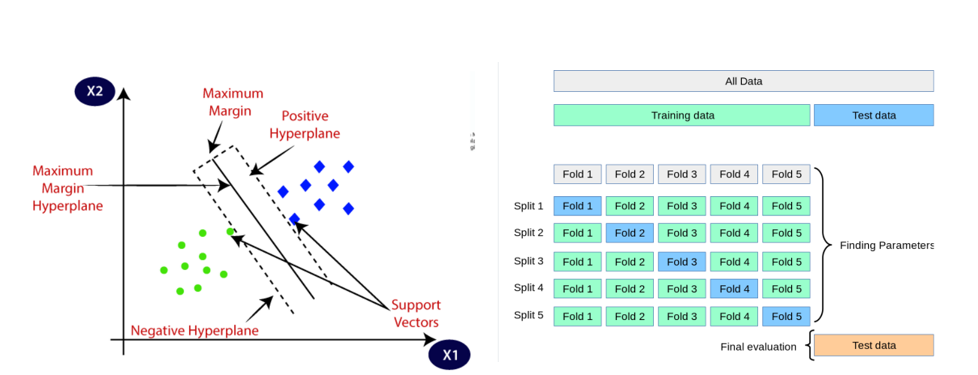

Accuracy-Fairness Tradeoff in Machine Learning
As learning models have become more advanced, concerns about fairness have become more prominent. There are many techniques in machine learning to eliminate the bias in the model and generate a model which gives predictions that are fair and accurate. The most prevalent technique in fair machine learning is to integrate fairness as a constraint or penalization term in the prediction loss minimization, which eventually limits the information provided to decision-makers. The main purpose of this project is to study the effect of regularization on the accuracy-fairness trade-off. This project will investigate the inherent bias of algorithms as well as evaluate fairness approaches devised to reduce prejudice, with an emphasis on accuracy deterioration, if any.
Dataset
For evaluating the effects of regularization on accuracy and fairness two datasets namely Bank Marketing and Adult datasets are used. Both the datasets are taken from UCI Machine Learning Repository.
1. Bank Dataset - The information in the data relates to direct marketing activities run by a Portuguese bank. The dataset has 21 variables that are a mixture of categorical, ordinal, and numerical data types such as age, education, loan, housing, job, etc. There are a total of 41,1161 rows of data, and 10,614 with missing values, leaving 30,547 complete rows. There are two class values, where age > =25 and age <25, meaning it is a binary classification task. in the dataset represents a person and if the person has subscribed ('yes') or not ('no') to a bank term deposit
2. Adult Dataset- The dataset involves personal details such as education level to predict whether an individual will earn more or less than $50,000 per year.The dataset provides variables that are a mixture of categorical, ordinal, and numerical data types such as Age, Education, Age, Sex, Race, Occupation, etc., There are a total of 48,842 rows of data, and 3,620 with missing values, leaving 45,222 complete rows. There are two class values, where income > 50 K and income <=50 K, meaning it is a binary classification task.
Classification Model
There are various classification algorithms in machine learning like logistic regression, multilayer perceptron, support vector machines, etc. In this Project, the Support Vector Machine algorithm is used for classification. Support Vector Machine algorithm finds the best margin that separates the classes, thus reducing the risk of error on the dataset.A Standard SVM model with 5-fold cross-validation is used to determine the maximum accuracy and fairness of both datasets The scikit-learn library is used for the SVM model. Each section/fold of a given dataset is used as a testing set at some stage There are five sections to the data set. The first fold is used to test the model in the first iteration, while the others are used to train it. In the second iteration, the second fold is used as the testing set, while the remaining folds are used as the training set. This process is repeated until each of the five folds has been evaluated.

Fainness Based Model
Unfairness can be either direct or indirect. Direct unfairness happens when a protected trait causes an adverse result directly, whereas indirect unfairness results from other factors that could be used to proxy the protected characteristic. There are two sources of unfairness in supervised machine learning. To begin with, machine learning predictions are trained on data that may have inherent biases. As a result, by learning from biased or prejudiced targets, typical learning procedures' prediction outcomes are unlikely to be fair. Second, even if the targets are fair, the learning process may compromise fairness because the goal of machine learning is to create the most accurate predictions.The fact that models are essentially based on data meansthat they will generally reflect the biases found in the data, very often increasing them.
Even though biases are a problem, they could be mitigated or even eliminated. There are various ways to evaluate how fair a model is, but in this investigation, the "Equality of Opportunity Difference" is the central focus. This measure examines the ratio of groups that were positively categorized as protected versus unprotected. when everyone has the same opportunities. Fairness algorithms can aid in the reduction of bias during pre-processing, in-processing, or post-processing. There are many fairness algorithms that can be used for reducing bias like Adversarial debiasing, and Reweighing. In this investigation, Reweighing is utilized to mitigate the bias.
Objectives
The investigation is divided into two major tasks
1. Analyse whether or not better generalization could corresspond to fairer models. In this task, SVM is used with 5-fold cross validation on training dataset and hyperparameters are vaired to selected a model with highest accuracy and a model with highest fairness
2. Apply a fairness-based algorithm and analyse the impact on accuracy and fairness In this task, fairness based-algorithm reweighing is used with SVM and 5-fold cross validation and hyperparameters are vaired tp select a model with highest accuracy and highest fairness
A few selected values of C and gamma were provided to the SVM model, where C = 0.001, 0.01, 0.1, 1, 10 and 100 and gamma = 0.001, 0.01, 0.1, 1, and 10. Table below displays the results of the most accurate and fair models on training and testing sets for both datasets.The bank Marketing dataset is already quite fair as compared to the Adult dataset. Although, when evaluatingon the test set both the models for the bank dataset showed almost the same accuracy, interestingly the fairness was lower in the second (most Fair) model. For the Adult dataset, the test result shows some difference in fairness as compared to the cross-validation results. The fairer model of banks, as well as the Adult dataset, showed a better TRPD in comparison with training models.
The reweighing algorithm was applied during the preprocessing stage to improve the fairness of the models. The original training and testing data for both the datasets were passed to the algorithm and the output of the algorithm with the weights generated in the process was then passed to the SVM classifier with 5-fold cross-validation. The results obtained for task 2 are shown in table below.